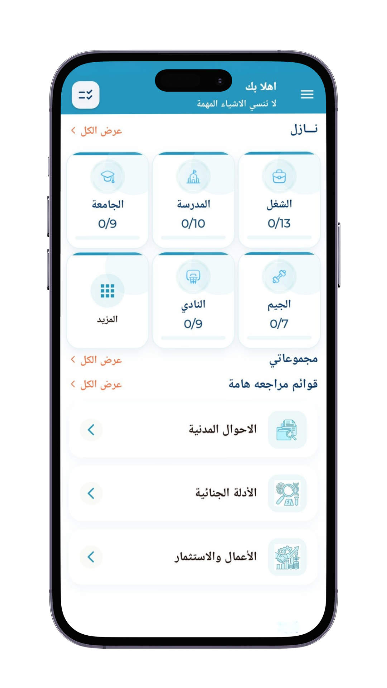

الهدف من نازل هو مساعدة الأفراد على التنظيم وتجنب الأخطاء. هدفنا الرئيسي هو تفادي النسيان وضمان إحضار جميع الأشياء الضرورية، مما يقلل من التوتر والقلق ويوفر الوقت والجهد.

نازل به قوائم مراجعة مرتبطة بالأنشطة اليومية للأفراد مثل الذهاب للعمل، الذهاب للجيم، المدرسة وغيرها من الأنشطة. يمكنك ضمان عدم نسيان أي شيء أو إغفاله. ويمكن للأفراد تحسين كفاءتهم وإنتاجيتهم، وتقليل التوتر والقلق، وتحقيق أقصى استفادة.
نازل مفيد لجميع الأعمار؛ فقوائم المراجعة مفيدة للشباب والكبار على حد سواء، فهي تساعد في تطوير مهارات التخطيط والتنظيم لديهم.
اكتشف كيف يمكن لتطبيق نازل أن يغير روتينك اليومي للأفضل
نازل هيساعدك في تطوير عادة التنظيم والترتيب في حياتك اليومية، وبالتالي حياتك هتكون إيجابية أكثر.
لا داعي للبحث عن الأشياء المفقودة أو التفكير فيما يجب أخذه معك، مما يوفر الوقت والجهد ويسهل عملية الخروج من المنزل.
هتضمن عدم نسيان أي شيء مهم مثل المفاتيح، المحفظة، الهاتف، النظارات، أو أي أغراض شخصية أخرى ضرورية.
أياً كان مجالك أو احتياجك، نازل يوفر لك القائمة المناسبة
هتضمن عدم نسيان أي شيء مهم مثل المفاتيح، المحفظة، الهاتف، النظارات أو أي أغراض شخصية أخرى ضرورية من خلال قائمة المراجعة الرئيسية الموجودة بالتطبيق والمخصصة لهذا الغرض، وستجدها في القائمة الجانبية تحت عنوان "لا تنسي الاشياء الضرورية".
هتضمن عدم نسيان اي شيء مهم ومرتبط بالنشاط اليومي لحياتك مثل الذهاب للعمل، الجيم، المدرسة وغيرها من الأنشطة من خلال قوائم المراجعة المخصصة لضمان عدم نسيان أي شيء أو إغفاله. لتحسين كفاءتك، وتقليل التوتر، وتحقيق أقصى استفادة.
نازل هيساعدك في معرفة وتعلم كل المطلوب للتعامل مع اي جهة سواء مؤسسة حكومية او خاصة من خلال قوائم مراجعة معدة خصيصا لهذا الغرض مثل التعامل مع المرور والقضاء ووزارات التموين والداخلية والخارجية وغيرها من الوزرات الهامة.
نازل مش ناسي أصحاب المهن الحرة مثل المحامين - الأطباء - المهندسين .... وغيرها من التخصصات المختلفة حيث توجد قوائم مراجعة معدة خصيصاً لكل تخصص عشان تسهل شغلهم وحياتهم المهنية.
نازل مش ناسي أيضاً العاملين في أي تخصص أو مجال زي المحاسبين والموارد البشرية وغيرها من المهن بحيث توجد قوائم مراجعة لكل تخصص.